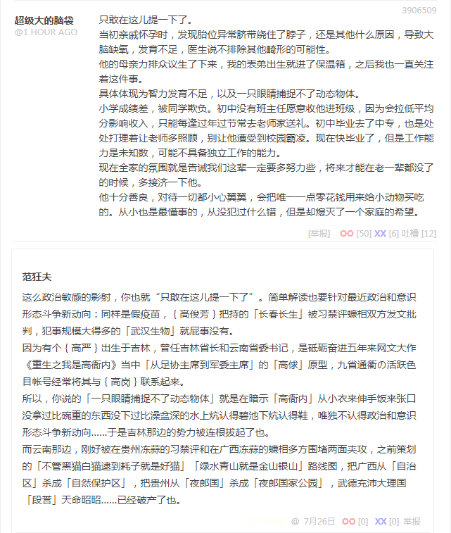

范狂夫
谢（知乎人工智障算法于首页今日头条位置醒目应景）推荐。
刚在九省通衢の煎蛋与活跃色目帐号谈笑风生，深入剖析了当代传媒工作者惯用的「如是我闻」型带节奏伎俩。

如是我闻
只敢在这儿提一下了。
当初亲戚怀孕时，发现胎位异常脐带绕住了脖子，还是其他什么原因，导致大脑缺氧，发育不足，医生说不排除其他畸形的可能性。
他的母亲力排众议生了下来，我的表弟出生就进了保温箱，之后我也一直关注着这件事。
具体体现为智力发育不足，以及一只眼睛捕捉不了动态物体。
小学成绩差，被同学欺负。初中没有班主任愿意收他进班级，因为会拉低平均分影响收入，只能每逢过年过节常去老师家送礼。初中毕业去了中专，也是处处打理着让老师多照顾，别让他遭受到校园霸凌。现在快毕业了，但是工作能力是未知数，可能不具备独立工作的能力。
现在全家的氛围就是告诫我们这辈一定要多努力些，将来才能在老一辈都没了的时候，多接济一下他。
他十分善良，对待一切都小心翼翼，会把唯一一点零花钱用来给小动物买吃的。从小也是最懂事的，从没犯过什么错，但是却熄灭了一个家庭的希望。
这么政治敏感的影射，你也就“只敢在这儿提一下了”。简单解读也要针对最近政治和意识形态斗争新动向：同样是假疫苗，高俊芳把持的「长春长生」被习禁评蠊相双方发文批判，犯事规模大得多的「武汉生物」就屁事没有。
因为有个高严出生于吉林，曾任吉林省长和云南省委书记，是砥砺奋进五年来网文大作《重生之我是高衙内》当中「从足协主席到军委主席」的「高俅」原型，九省通衢の活跃色目帐号经常将其与高岗联系起来。
所以，你说的「一只眼睛捕捉不了动态物体」就是在暗示「高衙内」从小衣来伸手饭来张口没拿过比碗重的东西没下过比澡盆深的水上炕认得碧池下炕认得鞋，唯独不认得政治和意识形态斗争新动向……于是吉林那边的势力被连根拔起了也。
而云南那边，刚好被在贵州冻蒜的习禁评和在广西冻蒜的蠊相多方围堵两面夹攻，之前策划的「不管黑猫白猫逮到耗子就是好猫」「绿水青山就是金山银山」路线图，把广西从「自治区」杀成「自然保护区」，把贵州从「夜郎国」杀成「夜郎国家公园」，武德充沛大理国「段誉」兲命昭昭……已经破产了也。
当然，当代传媒工作者惯用的带节奏伎俩还有「曰若稽古」型，在知乎首页推荐今日头条位置经常醒目应景推荐，通常是「三国爱好者」到处插科打诨嬉皮笑脸，在九省通衢の「军网最黄黄网最军」（现在已经不存在了也）也经常出现。
不过「曰若稽古」倒是在九省通衢の煎蛋这据称「上班族摸鱼圣地」比较罕见，那边还是「如是我闻」比较多，同学了同事了街坊了乃至道听途说都应有尽有。不过也不是没有，现在开始关注光消失的地方之类内部工作人员，肯定能等到。
等素材出现之后再来谈笑风生，顺便深入剖析其中所蕴涵的充沛的政治和意识形态内容以及所体现的政治和意识形态斗争新动向。